|

Monogram 1/24 Mack Bulldog Tanker Truck
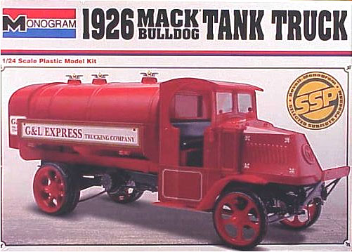
Kit #7539
MSRP $30.95 $24.76 from Squadron Mail Order
Images and text Copyright © 2015 by Matt Swan
Developmental History
The Mack brothers, John (Jack) and Augustus (Gus), founded their company "The Mack Brothers" in 1900 in Brooklyn, N.Y.. By 1905 they had moved their headquarters to Allentown, Pa. and produced their first truck in 1907. In 1915 the chain driven AC model entered production and served in WW1. This model truck stayed in production through 1935. This chain drive heavy hauler was used as a basis for many different cargo options such as the tanker this review looks at as well as a dump truck, stake truck and log hauler. It was a simple yet robust vehicle that has survived the test of time and many examples can still be found at truck shows today. In 1922 they adopted the Bulldog as their corporate logo and changed the name to "Mack Truck". In 1924 John Mack was killed in a car accident. The AB model truck produced in 1922 was a nearly identical styled truck with the distinction of being their first truck produced with a drive shaft verse a chain drive system. Mack Truck, while now part of Volvo, still produces trucks that set industry standards and in 2009 became a world truck embassy.
The Kit
Monogram has re-issued this kit several times over the years with some variance in decals. The kit has also been issued as a dump truck, stake truck and log hauler. A mutation of the kit has been done under the tutelage of Tom Daniels as the Beer wagon. Okay, it's not really any part of this kit but does bare a strong resemblance to the Mack AC series of truck - I digress.
Basically it is a sound kit with little or no flash even after the many re-pops. There does exist a medium sized mold separation seam around most of the parts and there are a few extra parts such as two styles of headlamps (neither of which are called for in this build) along with two version of tail lamps and a random fire extinguisher. There exist flashed over attachment points on the frame and cab parts for other versions of the kit but none of those need to be cleared for this build. Clear parts are provided for the front wind screen and the various headlamp lenses. Tires are all rubber with some flash around the mold separation seams that needs shaved off.
Construction
I found this old truck to be quite visually appealing and thought it would make an interesting addition to my built collection. It seems that nearly everyone who built this kit either went with the red or the green scheme and since I have such a hard time 'running with the pack' I looked for something different. I found several later model tanker trucks with a Sunoco Blue scheme which I thought was attractive so decided to go in that direction. Sadly by time I completed the build I had lost interest to the point that I simply did not feel like making the Sunoco decals so I ended up with a blue and gold Gargle Oil truck.
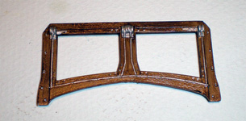
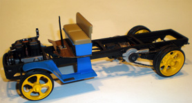
Construction was pretty straight forward starting with the engine and chassis. I added some wires to the engine compartment which was pretty easy as the actual truck had very little going on here. The kit chassis parts are molded in black but I went ahead and airbrushed most of them flat black to add some depth of color to things. Anywhere I was going to apply yellow was first base coated with flat white to improve color density. Anything that has a wood surface was first airbrushed cream then artists' oil paints in burnt umber and raw sienna were loosely mixed with a Japan dryer then brushed on with a short, stiff wide bristle brush to create the grain effect. This needs a day or two to set up after application.
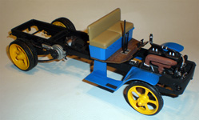
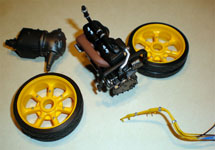
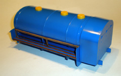
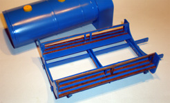
For the most part I built this kit right from the box. I did fabricate an ignition harness and laid in a couple control cables through the firewall. This is all real simple stuff and replicates pretty closely what was found on the actual truck. The wiring harness is very simple unlike the harness I had to deal with on my Porsche. As for the ignition harness I did have to add a box inside the front edge of the frame to tie it into. I found this to be a glaring omission in the kit as it is a fairly prominent feature on the real truck. The directions for the Tanker version of this kit do not indicate the use on any headlamps. I went ahead and added them and added the acetylene tank to feed the headlights (thanks to Alex for that piece of info) onto the front fender. Overall it was a pleasant build, the part fit was generally good with a few small issues around the radiator box, nothing that the application of a few small bar clamps could not fix. The build was enough fun that I am considering building a dump truck version and beating it up some to make a contrast build to this showroom piece.
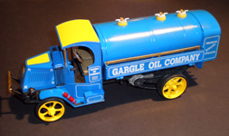
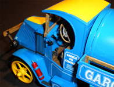
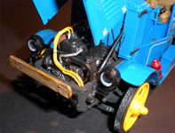
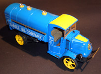
You may click on these small images to view larger pictures
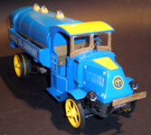
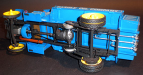
|


{kind=link}
{kind=link}
{kind=link}
{kind=link}
{kind=link}
{kind=link}
{kind=link}
{kind=link}
{kind=link}
{kind=link}
{kind=link}
{kind=link}